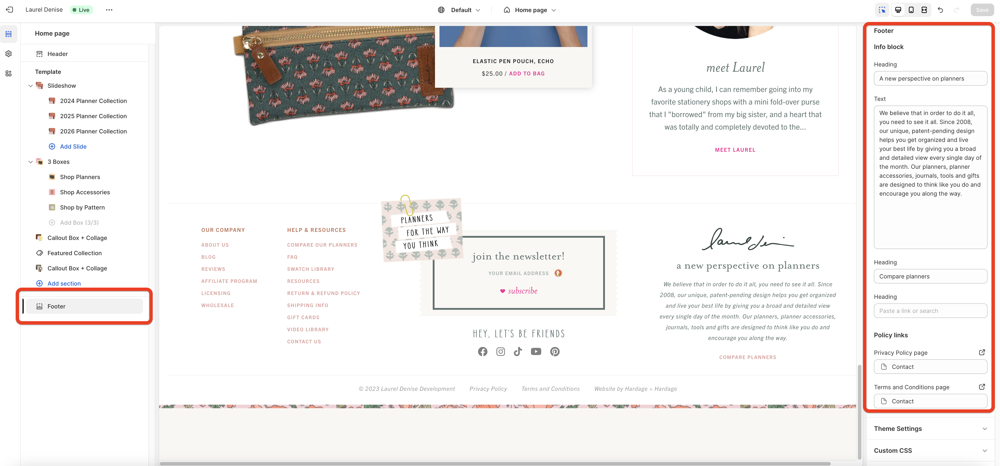

Laurel Denise
Sitewide
Site Announcement
Your shop announcement is editable from your theme editor → Header tab.
Navigation
Your navigation is editable from your admin →
Online store → Navigation page.
You can select which menu from your Navigation page to use as your main navigation from your theme editor → Theme settings → Menus tab.


You can also edit the "Contact us" link that displays in the mobile navigation menu from your theme editor → Header tab.
Dropdown Menus
You can edit the featurette postage stamp image that displays in each dropdown menu from your theme editor → Header tab.
For each dropdown menu you can edit the following fields for the featurette:
- Image: 800px square
- Caption
- Link (optional)
Make sure to match the navigation link title field with the title in your navigation menu.

Social Media Links
Your social media links are editable from your theme editor → Theme settings → Social Media tab.

Footer
The Info Block and Policy Links in your site footer are editable from your theme editor → Footer tab.
Info Block
Under the Info Block heading you can edit:
- Heading (e.g. A new perspective on planners)
- Text (e.g. We believe that in order to do it all, you need to see it all...)
Policy Links
Under the Info Block heading you can edit:
- Privacy Policy link
- Terms and Conditions link
The links are optional; if you leave a field blank, it will not display.
